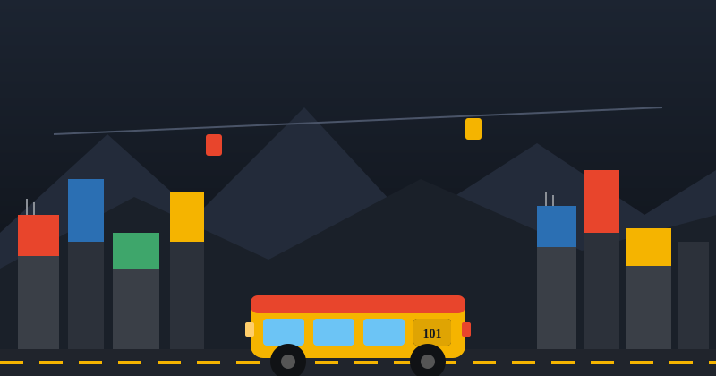

🏙️
Ciudad procedural
Manzanas, edificios "a medio construir", montañas y un teleférico decorativo animado, todo generado por código sin modelos externos.
Prototipo universitario · Three.js + Vite
Un juego de simulación y conducción urbana inspirado en La Paz y El Alto (Bolivia). Recorre la ciudad, recoge pasajeros, administra tu dinero y mantén tu minibús en pie de ruta en ruta.

De qué trata
Cuatro sistemas que se retroalimentan constantemente: economía, ruta, combustible y desgaste del vehículo.
Manzanas, edificios "a medio construir", montañas y un teleférico decorativo animado, todo generado por código sin modelos externos.
Ruta fija con 4 paradas, tarifas variables y cobro automático al detenerte junto a pasajeros esperando.
Mini-mapa en pantalla que marca tu próxima parada, tu posición y las paradas ya visitadas en tiempo real.
El tanque se consume al conducir; sin combustible el motor se apaga y necesitas llegar a la gasolinera más cercana.
Motor, frenos, neumáticos, suspensión y carrocería se desgastan con el uso y los choques; repáralos en el taller.
Sube transportando pasajeros y completando rutas con cuidado; baja si chocas contra la ciudad.